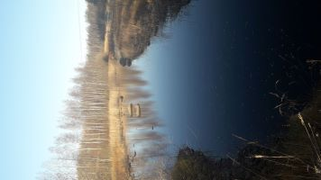

Pääsivu
Harrastukset
Aikoinaan lukeminen, ruoanlaitto, leipominen ja erilainen ulkoilu, mm. metsissä samoilu ja kalastus. Nykyään lapset vie kaiken ajan, mutta heidän kanssaan tulee paljon liikuttua ja nautittua maisemista.
